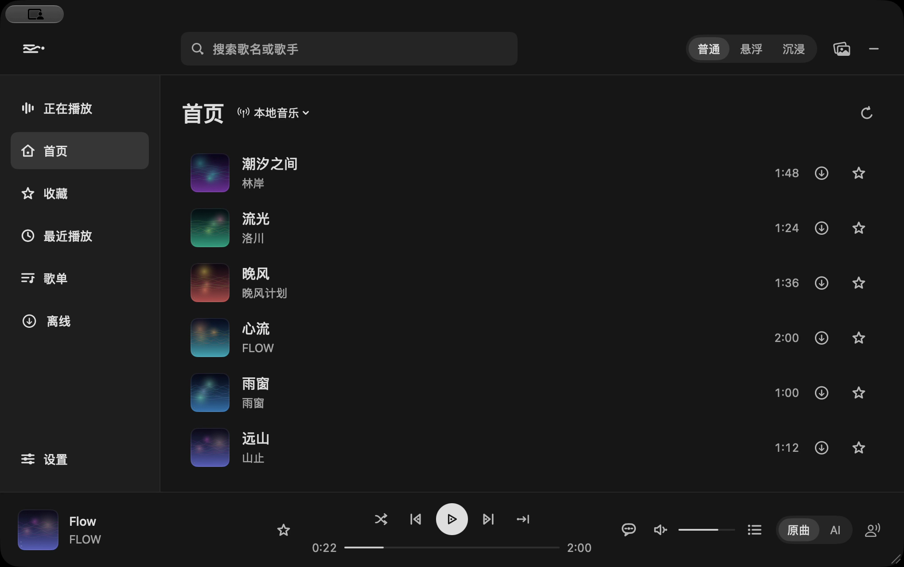
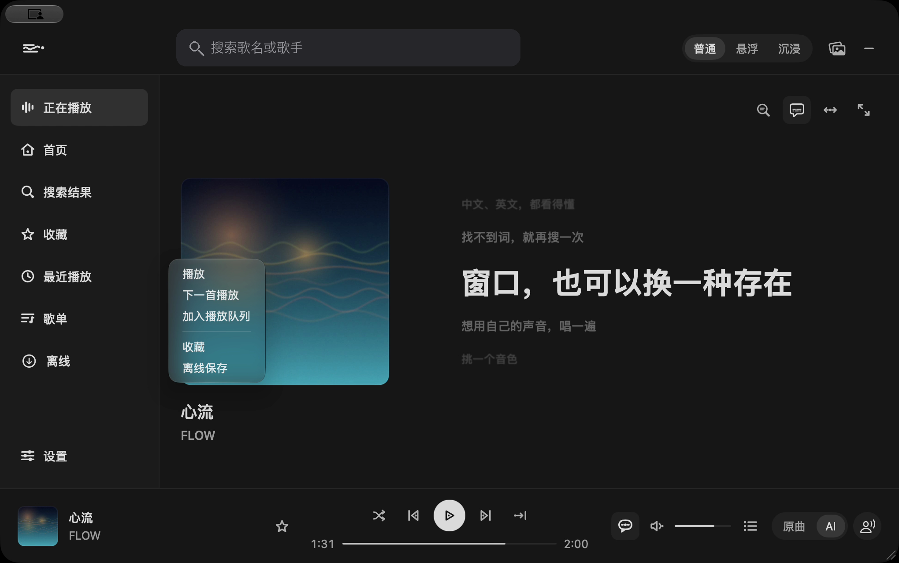
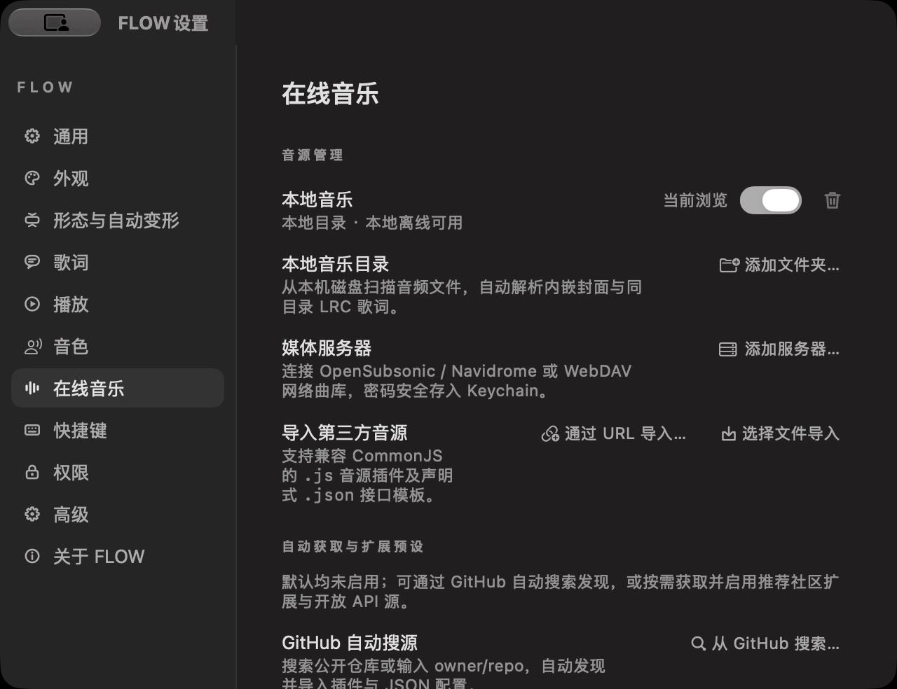

一个会自己找位置的
macOS 音乐播放器
播放时它待在桌面上；你切到别的应用，它缩成一条歌词； 桌面只剩一条缝，它贴到屏幕边缘；你在全屏工作，它悄悄让开。
macOS 14+ · Apple 芯片 · 免费开源 · MIT
也可以 查看源码

播放时它待在桌面上；你切到别的应用，它缩成一条歌词； 桌面只剩一条缝，它贴到屏幕边缘；你在全屏工作，它悄悄让开。
macOS 14+ · Apple 芯片 · 免费开源 · MIT
也可以 查看源码

形态
大多数播放器只有一个占着屏幕的大窗口，或者一个什么也做不了的小条。 FLOW 会读当前桌面还剩多少空间、你正在用什么应用，然后决定自己该以什么形态存在。 不是让你去点「迷你模式」，也不弹一个挡住你正在做的事的窗口。
普通窗口，愿意为焦点负责。封面与歌词并排，逐行点亮。
悬浮层，不抢焦点。失焦后空间足够时留下的一条。
只剩当前一句歌词，单击展开回完整形态。
只剩窄缝时，贴到最近的一条屏幕边缘。
全屏应用或空间不够时退成把手，或完全让出屏幕。
试玩
完整交互的网页还原版：真实播放、逐行歌词、五种形态切换、沉浸场景与设置面板。 用的都是真实的应用逻辑，只是把窗口换成了网页。
演示曲目为 7 首虚构作品，音频与歌词均为本站原创素材。
功能
没有广告、没有会员、没有社区区块。不内置任何商业曲库。
逐行与逐字高亮，中英双语同屏显示。
.lrc 侧车、内嵌标签、插件字幕
不内置曲库，音源由你自己配置。干净安装后是空的，需要什么配什么。

沉浸
颜色取自封面，背景随音乐的能量、低频与段落起伏变化。 每一拍有一道看得见的波，歌词只显示焦点附近四行。
 流光
流光 雨窗
雨窗 远山
远山 光影
光影安装
需要 macOS 14 或更新版本、Apple 芯片（arm64）。
从 GitHub Releases 下载最新的 FLOW-<版本>-arm64.dmg。
打开 DMG，把 FLOW 拖到「应用程序」文件夹。
第一次启动要右键 FLOW →「打开」→ 再点「打开」。之后正常双击即可。
音源
FLOW 不收录抓取商业平台的脚本。干净安装后是空的，需要你自己配置。
| 方式 | 说明 |
|---|---|
| 本地文件夹 | 选一个目录，自动解析内嵌封面与同目录 .lrc |
| 媒体服务器 | OpenSubsonic / Navidrome / WebDAV，密码存 Keychain |
| 第三方插件 | 兼容 CommonJS 的 .js 音源，跑在隔离沙盒 |
| JSON 模板 | 声明式接口模板，无需执行脚本 |
| GitHub 搜索 | 在应用里搜索公开仓库，自动识别可导入的音源 |
内置三个开放接口模板可直接用：Audius、Radio Browser、Internet Archive。 通过插件播放的内容版权归各自权利人所有，请只使用你有权访问的来源。
已知限制
不是免责声明。用之前你应该知道这些。
首次打开需要右键。个人维护的开源项目，不做付费的 Apple Developer Program 分发。
同步死循环可能阻塞导入。根治需要独立可终止的进程。
社区只发布 .pth 训练权重，而它是 Python pickle，读取即执行代码，所以应用不解析。转成 .voicepack 只需一次。
首次安装、VoiceOver、多显示器热插拔等尚未在真机完整走查。